Arnaud Vinsard avinsard@gmail.com
2011 – 2014: ISEN Toulon (Institut Supérieur Electronique et Numérique, Top French engineering school) Specialization : Systems and Networks
2009 – 2011 :DUT (two-year technical degree) in computer networks and telecommunication at IUT Valence
June 2008 :Scientific A-Level (Bacalauréat)
SPISEN
Involvement with my team to the sailing race « Spi Dauphine » to promote the engineering school ISEN. Six months of seeking sponsors to earn enough money in order to pay entry, boat rental and skipper.
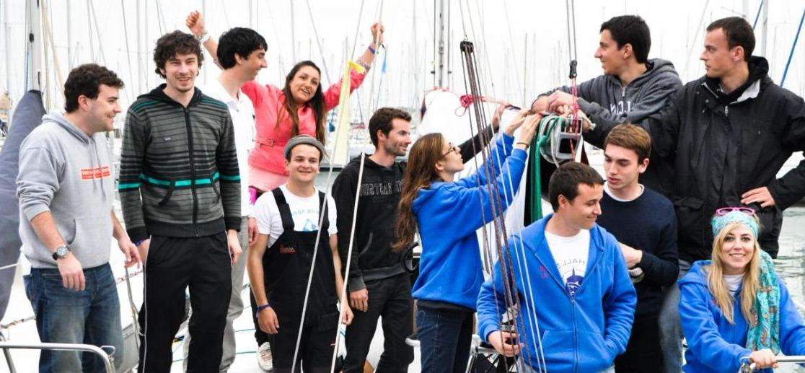SailBoat 'Avalon'
Implementation of a sailing boat automated with an aim of carrying out one to cross Atlantic Ocean
Personal Skills:
Critical thinking, teamwork dependable, flexible, motivation, ethical, patience
Developer skills:
.net Core, .Net Framework
APIs (RestFull, soap)
HTML5/CSS, angularJS
TeamCity, Octopus
RabbitMq
Postman, Swagger
Serilog, Seq (log tools)
Scheduling services
sql server
Azure Functions
GNU/Linux Debian/SLES/Centos
TFS, GIT, sourceTree
Management skills:
Agile method, Team Foundation Server (TFS)
Microsoft Project, Novell Vibe
Office skills:
Microsoft Office, LibreOffice, Latex
Volunteer with 15 workers on a site of archeological excavations during july 2016 and 2017. Restoration of the ramparts of a fortified town dating back to late antiquity
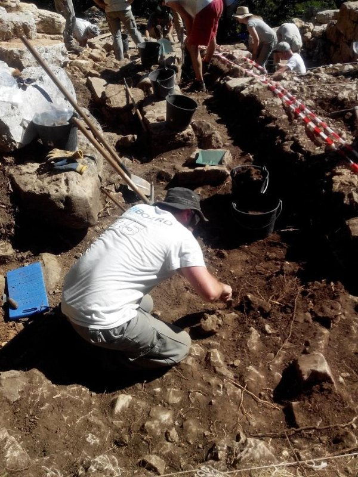 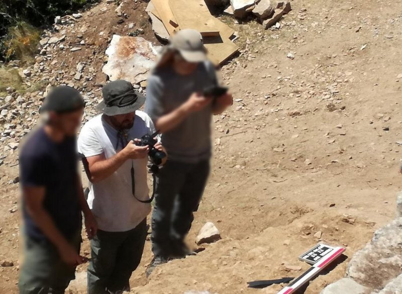 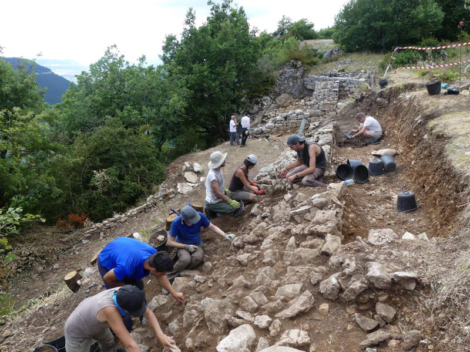 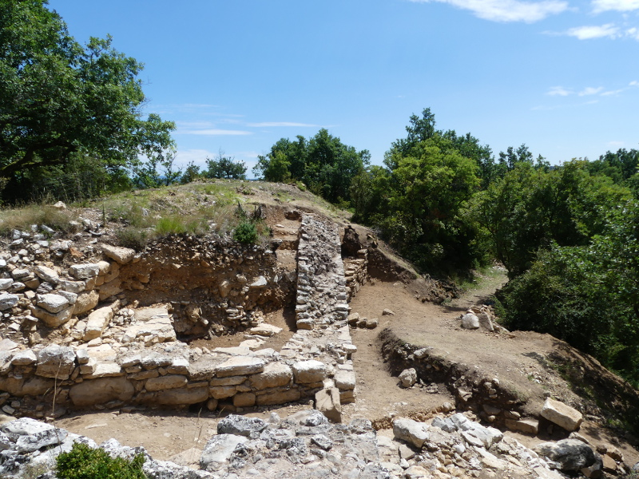2015 to 2017 C# Programmer at BiBOARD Grenoble
We develop as team of 6 engineer a BI software in ASP.NET technology. I participate to creative process in designing and developing new home page, portal and data visualization components (C# and JavaScript). I perform coding, unit test and documentation. Easily understand and solve technical problems, handling complaints from clients.(Technical support level 2)
main achievement:
2015 Junior Programmer and Admin System at ALTECA Grenoble
Programming and outsourcing of web application on (PHP, mysql) and technical support level 1 and 2. Administration and monitoring web hosting platform (30 servers) (RedHat, debian, Microsoft Server 2K3 2K8, virtualizatioon )
2014 Software developer at CEA Grenoble (French Alternative Energies and Atomic Energy Commission)
Development of a tool based on genetics algorithms for discover any communication protocol. This software is based on a fuzzer and the main goal is to do reliability and security test about ECU (Electronic Command Unit) of cars. The data are created by the software and they are sent on communication medium (CAN bus). Responses of the ECU are analyse by the software to create the new set of data that will be send
Internship summary2013 Junior System engineer (intership) at Net Online (IT services)– Valence France
Establishment of a monitoring platform for monitoring client system. Implementation of Ganglia (a scalable distributed monitoring system for high-performance computing systems such as clusters and rids). Presentation and demonstration to the customers during a metting.
My first mission at BiBOARD was to redesign the menu of the web portal. After a state of the art of different framework I choose Metro UI (a front-end framework in Windows Metro sytle). The new menu is implemented with a navigation bar and the differents views are symbolized by 'tile' and organized by category (favori, most views, recent and custom category):
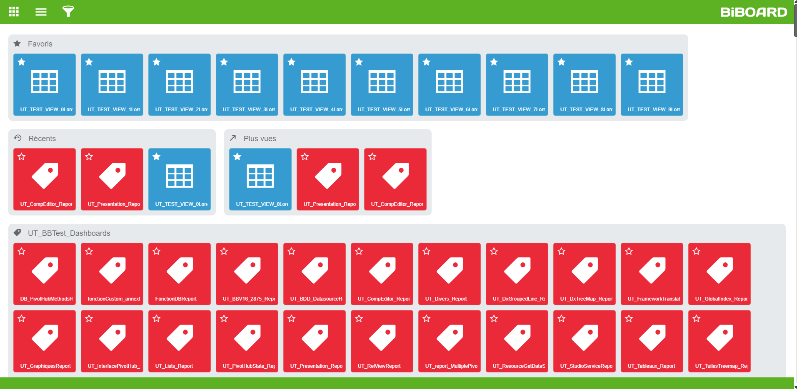I implemented severals features :
- Add/delete a view to the favori with a star full or empty
- A filter for a quick search
- A menu for custumize tile of a category
The menu of view page of the board is designed with the metro ui framework
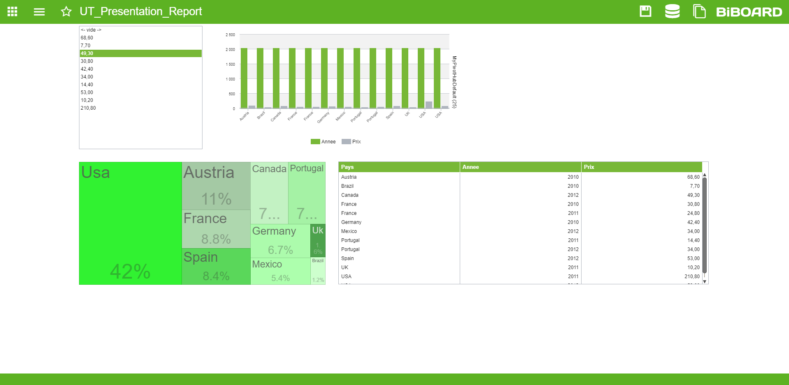I designed the 'grid tile' component with metro ui framework. It displays the data with tiles, it is a similar component as data table.
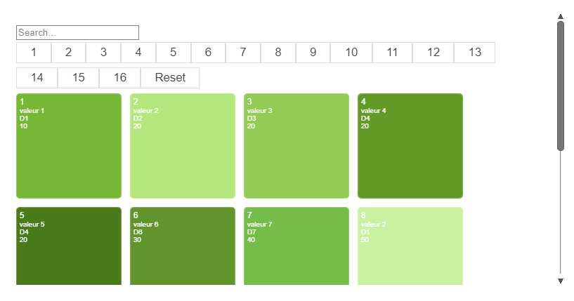 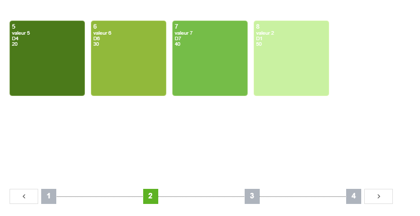The search page was designed with an inspiration of Codrops website. It is possible to save the search by a click on the button save. It creates a new category with the name of pattern search which contains all views of the search
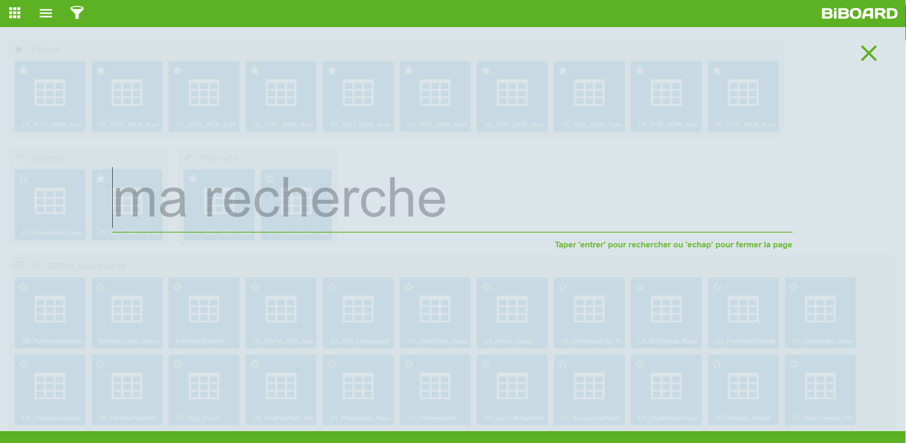 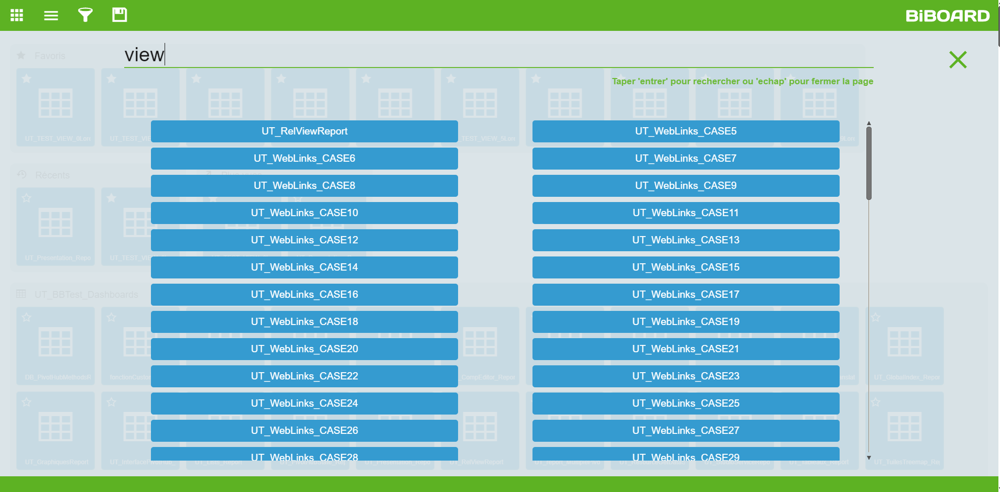The user needs to click on the color and the icon and the tile on right are updated and the user can save the selection by a click on the button save.
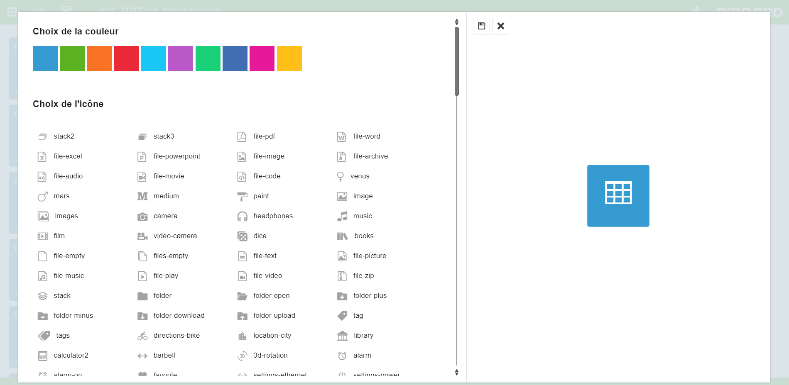We design (by pair programming) a new datasource for the components: the 'pivot hub'. It is a pivot table which provide the dataset:
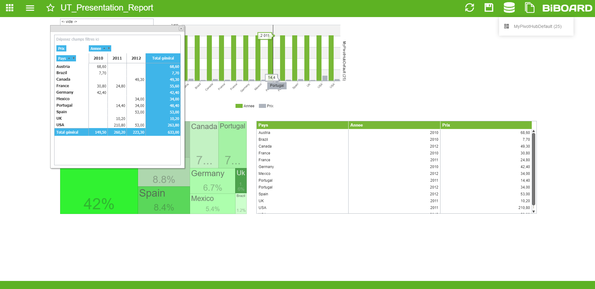 The user access to the 'pivot hub' by a list on the navigation bar and display it by pop-up windows.The user could modify the 'pivot hub' by filtering years for example, and all the components which are related to the 'pivot hub' are updated with the new values.
Une offre broadband (ou internet haut-débit) a été lancée en 2019 ainsi qu’une offre Oil (fioul en citerne) en 2021 pour lesquelles j’ai participé activement. J’avais un poste de Full Stack Software Developpeur pendant 3 ans et ensuite de Full Stack Technical Lead.